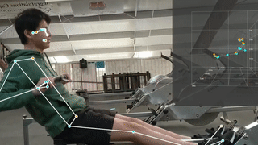

Hello! I am currently a freshman student-athlete at UC Berkeley studying Computer Science and Data Science. Drawing on past experience in back-end software development and a dedication to harnessing STEM for positive societal impact, I am passionate about the intersection of leading-edge technology and social good. I'm committed to using my skills in Computer Science and Data Science to drive meaningful change and make a positive difference in the world. Go Bears! 🐻
Skills
My expertise is tailored for backend development, machine learning, and full-stack projects, backed by proficiency in languages like Java, Python, and C/C++, as well as frameworks such as PyTorch and Node.js. I optimize workflows and craft effective solutions by harnessing developer tools like Git to meet diverse project requirements.
Git, Google Cloud Platform, VS Code, Visual Studio, PyCharm, Eclipse, Atom
Libraries
PyTorch, NumPy, TensorFlow, React
Experience
Check out some of my past experience!
AI Cyber Security Engineer Intern
MITRE Corporation
During my time interning at MITRE, I played a pivotal role in optimizing the performance and accessibility of an AI-driven Elasticsearch software. I fine-tuned a large language model (LLM) to convert natural language queries into executable Elasticsearch code, enabling broader access to information for all users. I further enhanced the system by reducing the LLM's size through quantization, pruning, and model distillation, which allowed for more cost-effective cloud hosting. Additionally, I designed and implemented the backend to integrate the LLM with other AI/ML models, ensuring seamless query transfers between Elasticsearch and the models. My efforts also included developing a role-based access control system using Entra ID SSO, which restricted users’ query capabilities based on their permissions.
As a key contributor to the development of A.rTouch, a pioneering touchless user interface program aimed at reducing the spread of COVID-19, I played a pivotal role in enhancing its performance and functionality. One of my notable achievements was improving the program's efficiency by 25% through the implementation of caching and memoization techniques. Additionally, I significantly contributed to the creation of A.rTouch's Minimum Viable Product (MVP) by enhancing precise hand-tracking and seamless mouse movement correlation by 100%. My efforts were instrumental in advancing A.rTouch's capabilities and were recognized through inclusion in the program's patent.
In my role as a coxswain, I lead practices and work with coaches and other coxswains to coordinate practice plans and techniques. Guiding and overseeing high-performance athletes, I dedicated 20-30 hours per week to rigorous training in anticipation of Division I competitions, demonstrating strong leadership and commitment to achieving competitive excellence.
I delivered a presentation elucidating the mathematical principles behiind the Rubik's Cube, delving into its role in fostering STEM thinking. Additionally, I engaged the audience with fascinating anecdotes and demonstrations, leaving them inspired by the magic of the Rubik's Cube in its way of teaching spatial reasoning and problem-solving.
During my time volunteering on behalf of the Intel Foundation, I pioneered initiatives aimed at bringing cutting-edge technology to underserved communities. Through programs such as Code for Hood, Hack the Park, and Future Skills Video, I introduced concepts like VR, Rubik’s Cubes, drones, AI programs, and Lego Mindstorm kits, fostering excitement and curiosity among participants. Additionally, I led instructional sessions on coding drones in Python and showcased VR experiences like Spider-Man to thousands of guests during the Mall of Americas 50th Moon Landing Anniversary celebration, engaging and inspiring audiences with the possibilities of emerging technologies.
Utilized 3D Body Pose estimation to analyze rowing form meticulously, offering precise and effective technique corrections for enhanced performance.
C++, Python, Java

Machine Learning/Game Development
Mobile Game
Developed a mobile app game using Unity, integrating machine learning for computer-optimized path-finding, and implemented post-game optimization analysis. Successfully launched the app on the Google Play Store, amassing over 1000 downloads and maintaining a high rating of 4.6/5.